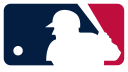
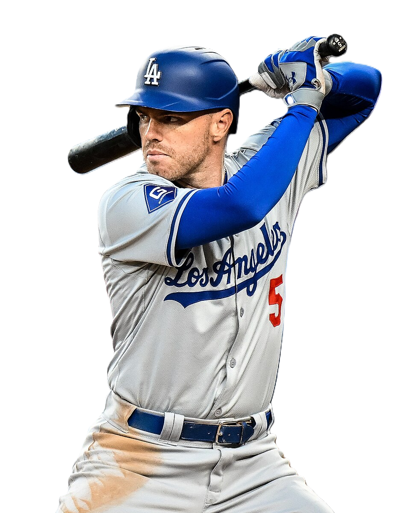
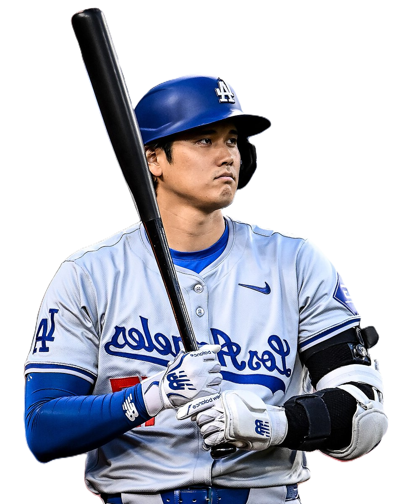

OFICJALNA STRONA MLB



Jeden z najlepszych pierwszobazowych w MLB, ceniony za niezwykłą konsekwencję i stabilną formę przez wiele sezonów. Wyróżnia się doskonałym uderzeniem, świetnym wyczuciem piłki oraz umiejętnością zdobywania kluczowych punktów dla swojej drużyny. Poza umiejętnościami sportowymi jest również naturalnym liderem, który swoją postawą i doświadczeniem inspiruje innych zawodników zarówno na boisku, jak i poza nim.

Wyjątkowy zawodnik, który w niezwykły sposób łączy rolę miotacza i pałkarza na najwyższym poziomie rozgrywek MLB. Jego wszechstronność jest czymś niespotykanym we współczesnym baseballu – potrafi dominować na górce miotacza dzięki sile, precyzji i różnorodności rzutów, a jednocześnie stanowi ogromne zagrożenie w ataku dzięki potężnym uderzeniom i świetnemu wyczuciu piłki. Swoimi osiągnięciami nie tylko zapisuje się w historii sportu, ale również inspiruje nowe pokolenie zawodników, pokazując, że można przełamywać schematy i redefiniować granice możliwości w baseballu.